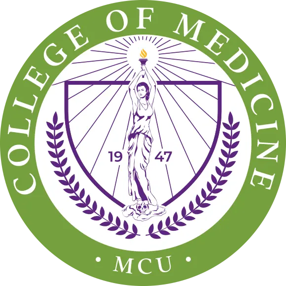
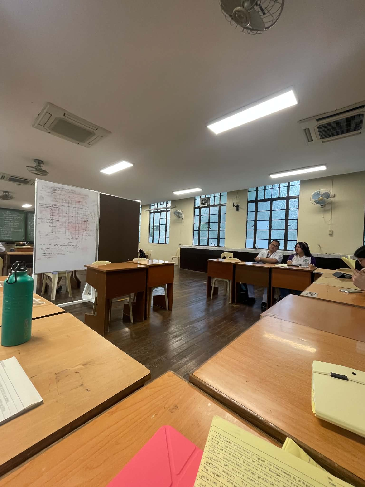
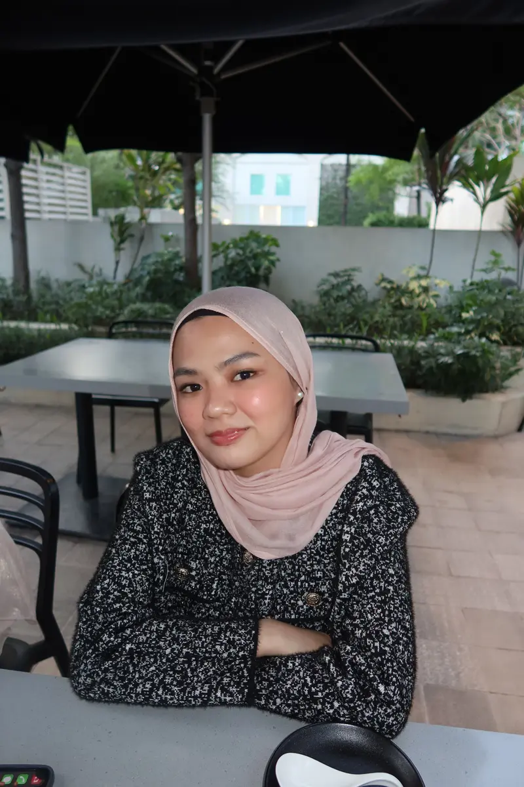
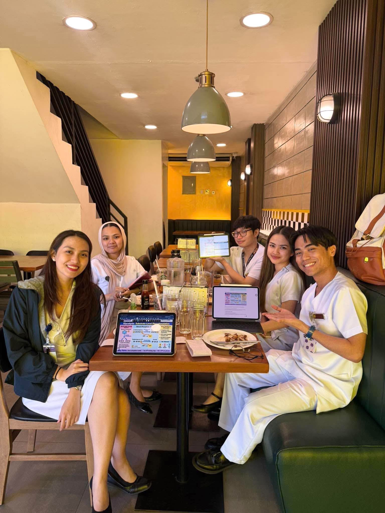

BSMT
Bachelor of Science in Medical Technology
Manila Central University


Manila Central UniversityCollege of Medicine
MD1-1 · PRELIM
Biochemistry
E-Portfolio
Registered Medical Technologist
Enter her learning journalFrom laboratory foundations
to the practice of medicine.
View Midterms ↗
A new chapter
I am a Registered Medical Technologist and currently a first-year medical student.
After completing my journey in medical technology, I decided to take another step toward my goal of becoming a physician. Starting medical school has been both exciting and challenging, but I see every experience as an opportunity to learn and grow.
This journal reflects my journey as I adjust to medical school, discover more about myself, and work toward the kind of doctor I hope to become.
“I chose this path because becoming a physician is something I truly want to pursue.”
The foundation
BSMT
Manila Central University
RMT
A foundation strengthened by laboratory science, precision, and patient responsibility.
MD1-1
Manila Central University College of Medicine
To make it through medical school while becoming a better version of myself along the way.
TWO NOTEBOOKS, ONE JOURNEY
Select a notebook to read its reflections and hear its soundtrack.
THE MIDTERM NOTEBOOK / 2026
Honestly, my midterm journey in Biochemistry has been a mix of unexpected wins, disappointing quiz scores, and moments when I genuinely wondered if anything was actually staying in my brain. Some days, I felt like I understood the lessons, while other days, everything seemed confusing no matter how hard I tried. There were times when I doubted myself, especially when I felt unprepared, but there were also moments that surprised me, like getting a good score on our long exam when I least expected it. Through all the highs, lows, and “Huh?” moments, I’m learning that progress isn’t always consistent, and that’s okay. I may not have everything figured out yet, but I’m still trying, learning, and growing one lesson at a time.
If I’m going to be honest, the title alone made me a little nervous. However, this chapter turned out to be easier to understand than I initially expected! Once I understood the main concepts, the lesson started to make more sense. It reminded me that sometimes, the hardest part of learning is simply getting started.
I realized that understanding the basics first makes complicated topics less intimidating. Instead of immediately worrying about all the details, I learned to focus on the main idea and build my understanding from there.
Bioenergetics explains how energy is transferred and used by the body, while ATP, or adenosine triphosphate, serves as the cell’s energy currency. Exergonic reactions release free energy, whereas endergonic reactions require an input of energy. Through energy coupling, ATP hydrolysis helps drive important cellular processes such as muscle contraction and active transport.
This chapter helped me understand that the body does not simply produce energy without purpose. Instead, it transfers and uses energy to support the processes necessary for life.
“ATP does not magically create energy. It transfers energy to power the processes that keep our cells functioning.”
Biologic oxidation was one of the topics I found overwhelming and confusing at first. There were so many processes, electron carriers, and reactions to understand, and I struggled to connect everything together. I tried my best to follow the discussion, but there were moments when I felt like nothing was really sinking in. The more concepts I encountered, the more difficult it became to understand how everything worked together.
I realized that this chapter required more than memorizing terms. I needed to understand how electrons move through the electron transport chain, how energy is released, and how that energy is used to produce ATP. It took extra time and effort to review the lesson on my own and break the concepts down into simpler explanations.
Although I found this topic challenging, it taught me that it’s okay if I don’t understand everything right away. Sometimes, I need to revisit a lesson, read it in my own time, and go through it step by step before things start to make sense. I’m still learning how to approach difficult topics, and this chapter reminded me to be more patient with myself throughout the process.
Biologic oxidation involves the transfer of electrons from one molecule to another during metabolic reactions. Oxidation means losing electrons, while reduction means gaining electrons, which I remember through the mnemonic OIL RIG: Oxidation Is Loss, Reduction Is Gain!
I also learned that coenzymes such as NAD⁺ and FAD accept electrons and become NADH and FADH₂. These reduced coenzymes carry electrons to the respiratory chain, where their energy contributes to ATP production.
“Sometimes, it is not that I cannot understand the lesson. I just need to find a different way to learn it.”
This chapter introduced me to another level of Biochemistry. There were so many complexes, electron carriers, protons, and processes to remember that I sometimes struggled to understand how everything worked together. At first, I was tempted to memorize each component separately just so I could remember something for the exam.
However, I eventually realized that memorization alone would not be enough. I needed to understand the sequence of events and how each component contributed to the overall process. It was challenging, but it also taught me the importance of being patient with myself when studying complicated pathways.
The electron transport chain takes place in the inner mitochondrial membrane. Electrons from NADH and FADH₂ pass through a series of electron carriers, and the energy released is used to pump protons across the membrane. This creates a proton gradient that drives ATP synthase to produce ATP through oxidative phosphorylation.
I also learned that oxygen serves as the final electron acceptor in the electron transport chain. This chapter helped me appreciate how different components work together to support the body’s energy requirements.
“I do not have to memorize every step blindly. Understanding how each step connects makes the entire process easier to remember.”
This chapter made me realize how interconnected the processes inside our bodies truly are. Before studying metabolism, I often viewed each pathway as a separate topic that I needed to memorize for an examination. However, I gradually understood that the body does not work according to separate chapters in a textbook.
Different pathways work together to provide energy, maintain balance, and support the body’s needs. Learning about metabolism helped me see the bigger picture and understand why certain processes become more active depending on whether the body is in a fed or fasting state.
What I Learned Metabolism refers to all the chemical reactions that occur in the body to sustain life. Catabolism breaks down complex molecules to release energy, while anabolism uses energy to build complex molecules. The body also uses different metabolic fuels, such as carbohydrates, fats, and proteins, depending on its energy requirements and nutritional state.
I learned that understanding the purpose of a pathway is just as important as knowing its individual reactions. Instead of asking only what happens in a process, I should also ask why it happens and how it connects to other pathways.
“The more I learn about Biochemistry, the more I realize that everything in the body is connected. Understanding the bigger picture makes the little details easier to appreciate.”
When I first encountered this topic, I thought learning about carbohydrates would be relatively simple. After all, carbohydrates are something we encounter every day through the food we eat. However, I quickly realized that there was much more to them than just glucose and sugar.
There were different classifications, structures, bonds, and properties to understand. Some concepts seemed easy at first but became confusing when I had to distinguish one structure from another. This chapter reminded me that even familiar substances can become complicated when studied at the molecular level.
Carbohydrates are important biomolecules that serve as energy sources and contribute to various biological structures and functions. They can be classified into monosaccharides, disaccharides, and polysaccharides based on the number of sugar units they contain.
I also learned that the structures and chemical properties of carbohydrates influence how they function in the body. Understanding these differences helped me appreciate the importance of carbohydrates beyond their role in providing energy.
“Just because something seems familiar does not mean I already understand everything about it. Sometimes, learning means looking at ordinary things from a completely different perspective.”
Sometimes, I just want to enjoy my food, but now that I’m studying Biochemistry, I can’t help but think about what happens inside my body after every meal. The carbohydrates I eat are digested into glucose, which undergoes glycolysis to produce pyruvate and eventually acetyl-CoA. Meanwhile, fats are broken down into fatty acids, which undergo beta-oxidation to produce acetyl-CoA as well. These molecules enter the TCA cycle, where NADH and FADH₂ are generated and carry high-energy electrons to the electron transport chain. Through oxidative phosphorylation, these electrons help drive ATP production, providing the energy my body needs to function. It’s funny how something as simple as eating has become a reminder of how complex and amazing the human body is. Now, even when I’m just eating, I find myself thinking about the biochemical processes happening inside me.
For now, I guess I can no longer eat a meal without thinking about glycolysis, acetyl-CoA, the TCA cycle, and ATP production. As funny as it sounds, Biochemistry has changed the way I see something as ordinary as eating. It reminds me that behind every simple activity, countless reactions are taking place to keep me alive. And perhaps that is one of the most interesting things about learning medicine: discovering the science behind things we often take for granted.
The citric acid cycle, also known as the Krebs cycle or tricarboxylic acid cycle, begins when acetyl-CoA combines with oxaloacetate to form citrate. Through a series of reactions, the cycle generates NADH, FADH₂, and GTP or ATP while regenerating oxaloacetate.
The NADH and FADH₂ produced can then deliver electrons to the respiratory chain for ATP production. I learned that this pathway is essential because it connects different areas of metabolism and helps the body obtain energy from nutrients.
“Sometimes, a long list of reactions becomes easier to understand when I remember the bigger purpose behind them.”
Glycolysis was one of the topics I found difficult to study because there were so many enzymes, intermediates, and reactions to remember. At first, I struggled to understand the pathway, especially when identifying which steps consumed ATP, which produced ATP, and how each reaction connected to the next. Sometimes, I would understand a step while studying, only to get confused again when reviewing the entire pathway.
As I studied the chapter, I realized that memorizing the enzymes alone wasn’t enough. I needed to understand the process step by step and recognize the purpose of each reaction. It took time and repeated reviewing before I could better understand how glucose is broken down and how the body captures energy from it.
Glycolysis is the process through which one glucose molecule is converted into two pyruvate molecules. It occurs in the cytoplasm and produces a net gain of two ATP molecules and two NADH molecules per glucose molecule.
Pyruvate can then be converted into acetyl-CoA through the pyruvate dehydrogenase complex under aerobic conditions, allowing its carbon to enter the citric acid cycle. This chapter helped me understand how glucose metabolism contributes to the body’s energy supply.
“I do not have to understand the entire pathway all at once. Taking it one reaction at a time can make even the most confusing process manageable.”
This chapter challenged me in a different way because I had to understand not only the pathways themselves but also how they were regulated. Glycogenesis and glycogenolysis sounded similar at first, and keeping track of the enzymes involved sometimes became confusing. I also had to understand how hormones influenced these processes.
There were moments when I mixed up which enzymes were activated or inhibited, especially when learning about phosphorylation and dephosphorylation. However, I gradually realized that understanding the body’s purpose makes these mechanisms easier to remember. The body needs to store glucose when it is available and mobilize it when energy is needed.
What I Learned Glycogenesis is the process of converting glucose into glycogen for storage, while glycogenolysis breaks down glycogen to help provide glucose or glucose-derived energy.
I learned that insulin generally promotes glycogen synthesis, whereas glucagon and epinephrine help stimulate glycogen breakdown in appropriate tissues. I also became familiar with enzymes such as glycogen synthase and glycogen phosphorylase, as well as glycogen storage diseases that result from defects in glycogen metabolism.
“Understanding the purpose of a process makes it easier to remember the enzymes involved. I just need to ask myself what the body is trying to accomplish.”
This chapter definitely tested my understanding of metabolic regulation. I had to distinguish gluconeogenesis from glycolysis, remember which steps required different enzymes, and understand how hormones and energy signals influenced the pathway. At some point, the enzyme names started looking so similar that I needed to slow down and review everything again.
One of the things I found challenging was understanding how the body decides whether to break down glucose or produce more of it. I realized that the answer was not simply about memorizing which enzyme did what. I needed to understand the body’s energy status and how different signals affected metabolic pathways.
Gluconeogenesis is the process of producing glucose from non-carbohydrate precursors such as lactate, glycerol, and glucogenic amino acids. It is particularly important during fasting, when the body needs to maintain blood glucose levels.
I also learned that gluconeogenesis and glycolysis are regulated differently. For example, AMP inhibits fructose-1,6-bisphosphatase-1 (FBPase-1), signaling that the cell has a low-energy state. Fructose-2,6-bisphosphate also inhibits FBPase-1 while stimulating phosphofructokinase-1, helping regulate the balance between gluconeogenesis and glycolysis.
This chapter helped me understand that metabolic pathways are carefully regulated according to the body’s needs rather than simply operating continuously at the same rate. Core Memory
“When I get confused by similar enzymes and pathways, I need to stop memorizing for a moment and understand the bigger picture. The body responds to what it needs, and learning should work the same way.”
At first, I wondered why the body needed another pathway for glucose metabolism when glycolysis was already responsible for breaking down glucose to produce energy. As I studied this chapter, I realized that glucose serves purposes beyond ATP production.
This lesson also introduced me to the importance of NADPH and its role in protecting cells from oxidative damage. I found it interesting that a pathway could be especially important even though it does not directly produce ATP. It reminded me that every biochemical pathway has a purpose, even when that purpose is different from what I initially expect.
The pentose phosphate pathway begins with glucose-6-phosphate and produces NADPH and ribose-5-phosphate. NADPH is important for reductive biosynthesis and for maintaining reduced glutathione, which protects cells against oxidative damage.
I also learned about glucose-6-phosphate dehydrogenase (G6PD), an important enzyme in the oxidative phase of the pathway. G6PD deficiency can reduce the ability of red blood cells to handle oxidative stress, potentially leading to hemolysis under certain conditions.
This chapter helped me connect a biochemical pathway to a clinically significant condition and understand why NADPH is essential for maintaining red blood cell integrity.
“Not every pathway exists to produce ATP. Some pathways protect our cells, support important reactions, and help keep the body functioning properly.”
BEYOND THE CHAPTERS / 01
Honestly, I didn’t expect to get a good score on this long exam because I knew I hadn’t studied everything. There were still topics I hadn’t covered, and I wasn’t sure if I had absorbed enough information to answer the questions confidently.
During the exam, I kept second-guessing myself, especially when I encountered questions I wasn’t sure how to answer. I just tried my best and hoped that what I had studied would be enough.
So when I found out that I got a good score, I was genuinely surprised! Alhamdulillah, it felt so good to see a result I wasn’t expecting. It reminded me that sometimes, I know more than I give myself credit for. Of course, I still need to improve my study habits and be more consistent, but this was definitely a little win worth celebrating.
BEYOND THE CHAPTERS / 02
And just when I thought that was already a nice surprise, the midterm exam came along. Little did I know, I was about to experience that same feeling of uncertainty all over again. After taking the exam, I was SO drained. Like, what just happened? The questions were confusing and difficult, and there were so many moments when I just stared at the choices, trying to figure out which one made the most sense. I kept second-guessing myself, and honestly, I felt like I was just trying to survive until the last question.
I knew I hadn’t studied everything, and even the topics I reviewed sometimes felt unfamiliar during the exam. You know that feeling when you study something, but when you finally see it in a question, your brain suddenly goes, Wait, what was that again? Yeah, that was me. HAHAHA.
After the exam, I had already accepted the possibility that I might not pass. So when I found out that I passed, I was genuinely surprised. Passing the long exam was already a happy surprise, but passing the midterm, too, made me even happier! Alhamdulillah.
This experience reminded me that just because I feel unprepared or doubt myself doesn’t automatically mean I’m going to fail. I still have a lot to learn, but I also want to stop focusing only on what I could have done better and start appreciating the progress I’ve made.
BEYOND THE CHAPTERS / 03
Another memorable experience this midterm season was our Silent Vehicle SGD. I was honestly nervous because it was our first real SGD, and I became the secretary, too.
Aside from following the discussion, I had to make sure I documented the important points properly. I felt a little pressured because I wanted to do my part well while also keeping up with the discussion. But beyond the nervousness, I can honestly say that I learned a lot from this experience. Listening to the discussion helped me understand the case better, connect what we had learned in our lectures to an actual clinical scenario, and appreciate how important it is to think critically rather than simply memorize information. Hearing different perspectives from my groupmates also helped me see things I might not have considered on my own.
It was a different kind of learning experience, and even though I was nervous at first, I’m glad I got to be part of it. It reminded me that learning medicine isn’t just about reading books and preparing for exams. It’s also about asking questions, sharing ideas, listening to others, and learning how to approach a case as a future doctor.
Overall, our Silent Vehicle SGD was both challenging and meaningful for me. I may have started the session feeling nervous, but I finished it with new knowledge and a better appreciation for this kind of learning.

Prelim notebook
Select an entry to open the reflection.
Starting Biochemistry introduced me to concepts that I knew were important but had never truly understood in depth. Learning about water and pH helped me realize that even simple things can have a major role in keeping the body functioning properly. At first, I saw water mainly as something we need for hydration, but I learned that it is also involved in temperature regulation, transportation, and many chemical reactions.
This lesson became my starting point in understanding how the body maintains balance. It reminded me that in medicine, even the smallest concepts can become important when understanding what happens inside the human body.
The quiz on water and pH was a little challenging for me because I was still trying to fully understand the concepts. There were questions that made me nervous and unsure of my answers, but the experience helped me recognize the areas I still needed to improve. We also started learning about amino acids and peptides, which felt overwhelming because of the many structures and terms I had to familiarize myself with.
As I continued studying, I realized that learning Biochemistry is not only about memorizing names and structures. I need to understand their properties and how they connect to the bigger picture.
This experience taught me that struggling with a topic does not mean I cannot learn it. It simply means I need to give myself more time and effort.
Learning about the art of questioning made me realize that communication is more than simply asking questions and receiving answers. The way we ask questions can influence how comfortable a patient feels and how much information they are willing to share.
At the same time, our discussion on protein structure reminded me that structure and function are closely connected. Although some of the concepts were still challenging for me, I began to appreciate how the lessons we learn in class can eventually be applied to understanding diseases and patient conditions.
This day reminded me that becoming a healthcare professional requires not only knowledge but also the ability to communicate and understand others.
Our Labster orientation introduced me to a different way of learning laboratory concepts. At first, I thought laboratory learning mainly depended on performing physical experiments, but I realized that virtual simulations can also help us visualize procedures and understand concepts more interactively.
This Self-Directed Learning activity made me appreciate how important water is in maintaining the body’s balance. I initially found the case challenging, especially when I had to connect the patient’s symptoms and laboratory results to dehydration and metabolic acidosis.
As I worked through the case, I gained a better understanding of how pH and the body’s buffer systems help maintain acid-base balance. Instead of simply memorizing concepts, I had to apply what I learned to a clinical situation.
This activity reminded me that Biochemistry becomes more meaningful when I can relate what I learn to real situations in medicine.
This Self-Directed Learning activity helped me realize that not all anemia is caused by iron deficiency. When I first saw Henry’s pallor, fatigue, and microcytic anemia, I naturally thought about iron deficiency. However, when his condition did not improve despite iron supplementation, I realized that there could be another underlying cause.
Understanding how an α-globin gene defect can affect hemoglobin production and red blood cells was challenging, but it helped me see how Biochemistry can explain what happens in a disease at the molecular level.
This activity taught me not to rely only on my first impression. In medicine, it is important to look at the whole clinical picture and understand what is happening beneath the symptoms.
My assessment on this day was a reminder that knowing a lesson requires more than simply memorizing information. There were areas where I did not perform as well as I had hoped, and although it was disappointing, it helped me recognize the topics that I needed to work on.
I realized that studying is not about simply going through more pages. I need to study strategically, understand the concepts, and spend more time on the areas that I find difficult.
Instead of seeing my mistakes as failures, I chose to see them as opportunities to improve. This experience reminded me that understanding the basics of Biochemistry will become important as I continue learning about physiology, diseases, laboratory findings, and patient care.
Seeing an improvement in my performance reminded me that progress can come from consistency and learning from mistakes. My previous assessment showed me the areas where I needed to improve, so I tried to become more intentional with my studying and review.
This experience made me realize that one low score does not define my ability as a student. What matters is how I respond to it and what I do differently afterward.
My improvement gave me a little more confidence and reminded me that growth does not always happen immediately. Sometimes, it comes from simply continuing to try even when the previous attempt did not go as planned.
The discussion on enzymes was honestly one of the most difficult topics for me. I was trying to read and understand the lessons, but there were moments when I felt like nothing was making sense. I struggled internally because no matter how much I tried to study, I still felt unable to understand the concepts.
Thankfully, Doc A made time for a review session and patiently went through the topic with us. It helped me understand some of the concepts better and made the lesson feel a little less overwhelming. This experience reminded me that struggling with a topic does not mean I am incapable of learning it. Sometimes, I simply need more time, another explanation, and a little patience with myself.
I may not understand everything about enzymes yet, but I am slowly getting there. For now, I am grateful for that progress.
Even though our classes were suspended, Doc A still took the time to prepare a review session for us. I am genuinely grateful for the time, effort, and patience given to make sure we could continue learning. Sometimes, the people who take the extra step to help us are the ones who make the biggest difference.
I found the examination very difficult and had already accepted that I might fail. Finding out that I passed was a beautiful surprise and a reminder that Allah's plans can be greater than our fears. Alhamdulillah, this experience taught me never to lose hope, even when I feel I have reached my limit.
Biochemistry first felt like a collection of terms, structures, and processes to memorize. Through water, pH, amino acids, proteins, hemoglobin, myoglobin, and enzymes, I slowly realized that these concepts are part of what makes the human body work. Understanding them will help me make sense of disease, laboratory results, and treatment as I continue in medicine.
Outside the notebook

Prelim reflection
Looking back on the prelim period, I realize that it was a season of both struggle and growth. Not every quiz went well, some lessons took more time to understand, and class suspensions sometimes disrupted my routine.
Although these moments were discouraging, they taught me to be more patient with myself and to learn from my mistakes. Setbacks are not failures, but part of the process of becoming better.
As I move forward, I hope to be more consistent, prepared, and confident in my studies while continuing to learn and grow from every experience.
WHAT I WILL CARRY FORWARD
Looking back on my Biochemistry journey so far, I can honestly say that it has challenged me in more ways than one. It has tested my patience, my study habits, and my ability to keep going when I feel overwhelmed. There were lessons I understood quickly and others that required me to read, write, and review them multiple times before they finally made sense.
I also realized that I cannot expect myself to learn everything in one sitting. I need to be patient with myself, recognize the areas where I struggle, and find study methods that actually work for me. Instead of feeling discouraged whenever I make a mistake, I want to learn how to use those mistakes as opportunities to improve.
Along the way, I also learned that studying doesn’t always have to be a journey I take alone. Having study-outs with my friends has reminded me that sometimes, a lesson becomes easier to understand when we explain concepts to one another and learn from each other’s perspectives. Medical school can be overwhelming, but having people who are going through the same experiences makes the journey feel a little less difficult. It really takes a village in med school, and I’m grateful that we get to learn and figure things out together, one confusing topic at a time. Most importantly, I learned that progress does not always have to be dramatic. Sometimes, it is as simple as understanding one difficult concept, remembering an enzyme I used to confuse, or doing a little better on a quiz than I did before. Even the small wins deserve to be appreciated.
As I continue my journey through medical school, I want to carry these lessons with me. Biochemistry is teaching me not only about the processes that keep the human body alive but also about the patience, discipline, and persistence needed to become a better student. It is also teaching me to ask for help when I need it, remain open to learning from others, and give myself time to grow.
I may not have everything figured out yet, and I know there will be more difficult lessons ahead. But for now, I am learning to celebrate small wins, trust the process, and keep showing up even when things get hard. I know there will still be quizzes with unexpected results, topics that make me question everything I studied, and moments when I feel like nothing is sinking in. But I hope to face those moments with a little more patience and confidence than before.
Because at the end of the day, I am not just trying to pass Biochemistry. I am learning how to become a better version of myself, one lesson at a time, while appreciating the people who make this journey a little easier.

“It really takes a village in med school.”